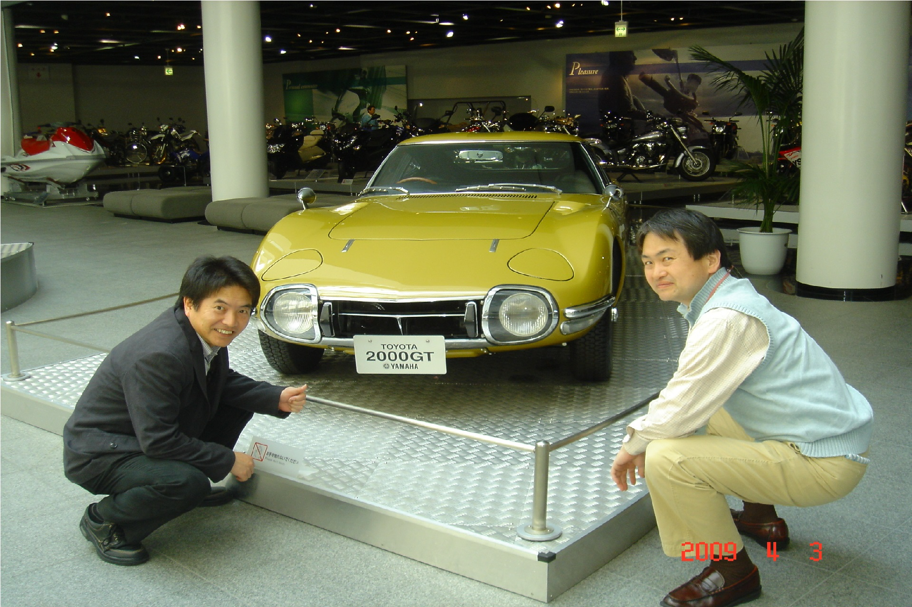
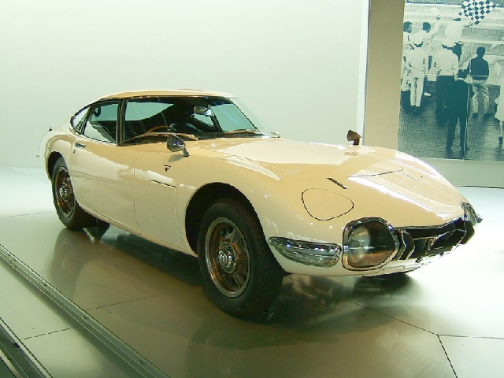
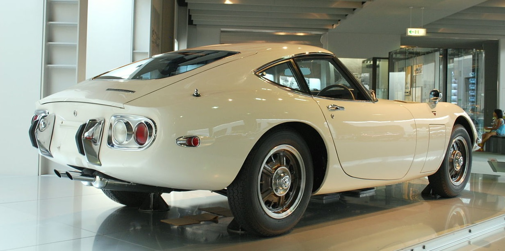
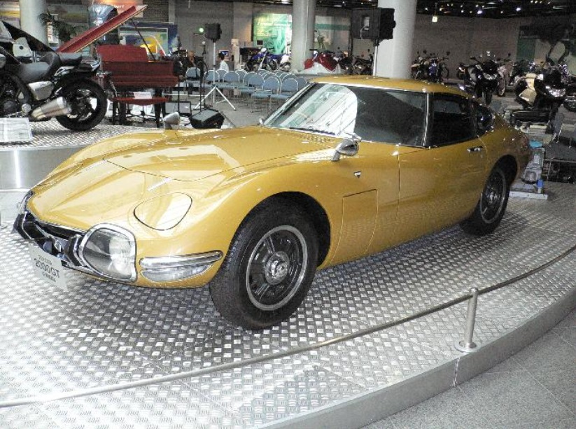

TOYOTA2000GT
-

登場型 フロント
製造期間 ： 1967年 - 1970年
販売期間 ： 1967年 - 1970年
デザイナー ： 野崎喩
乗車定員 2名
ボディタイプ 2ドアクーペ
駆動方式 FR
-

登場型 リア
エンジン
MF10型 1988cc 3M型直列6気筒 DOHC
MF12L型 2253cc 2M-B型直列6気筒 SOHC
最高出力
MF10型 150ps/6600rpm ,
MF12L型 140PS/5800rpm
サスペンション
4輪ダブルウィッシュボーン(ｺｲﾙｽﾌﾟﾘﾝｸﾞ)
-

ヤマハ本社にて展示されている2000GT
3台しか生産されなかったゴールド塗装車のうちの1台
シャシー番号10132